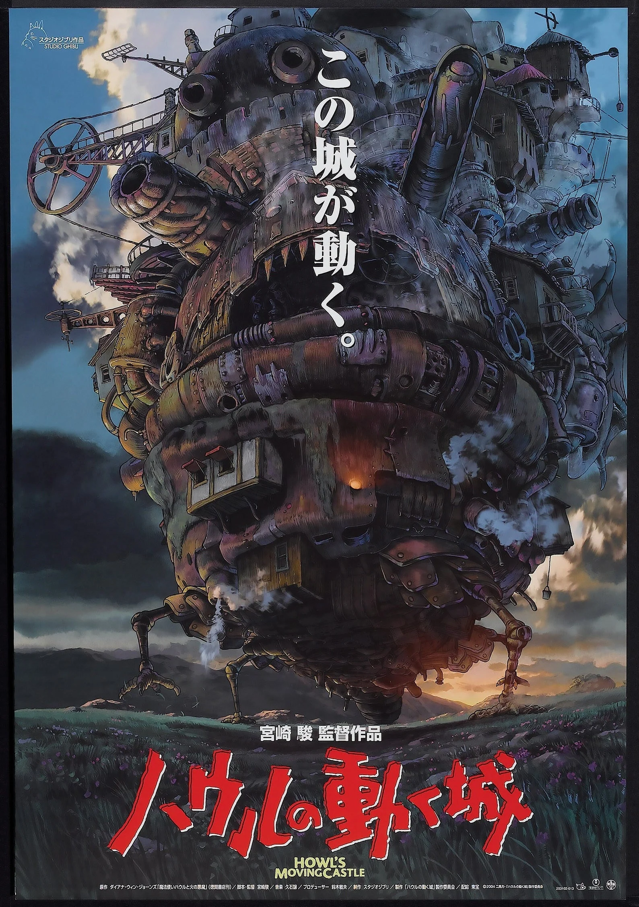

Howl's Moving Castle (2004)
Howl's Moving Castle (Japanese: ハウルの動く城, Hepburn: Hauru no Ugoku Shiro) is a 2004 Japanese animated fantasy film written and directed by Hayao Miyazaki. It is loosely based on the 1986 novel of the same name by English author Diana Wynne Jones. The film was produced by Toshio Suzuki, animated by Studio Ghibli and distributed by Toho.
The film is set in a fictional kingdom where both magic and early twentieth-century technology are prevalent, against the backdrop of a war with another kingdom. It tells the story of Sophie, a young milliner who is turned into an elderly woman by a witch who enters her shop and curses her. She encounters a wizard named Howl and gets caught up in his resistance to fighting for the king.